Authoring Techniques for Accessible Office Documents: Microsoft Word 2010
Quick Reference
"Curb Cuts"
This icon highlights "curb cut" opportunities in these techniques. "Curb cuts" are situations in which accommodations made for accessibility reasons will also result in significantly better and more efficient outcomes for everyone. The name comes from sidewalk "curb cuts" that were added for people in wheelchairs, but are commonly used by people with baby strollers, handcarts, wheeled luggage, and others.
Technique 1. Use Accessible Templates
WCAG 2.0 Applicability:
All office documents start with a template. These can be as simple as a blank standard-sized page or complex nearly-complete document with text, graphics and other content (e.g. a "Meeting Minutes" template). Because templates provide the starting-point for so many documents, accessibility is critical. If you are unsure whether a template is accessible, you should check a sample document produced when the template is used (see Technique 10. Check Accessibility).
Word 2010’s default template for new documents is a blank page. The basic installation also includes blank business card, blank label templates, and other blank office-related documents. These are all accessible by virtue of being blank. It is possible to create your own accessible templates.
Curb Cuts: Updating templates is also a good opportunity to improve document consistency, copy-editing, and branding.
To create an accessible template:
- Create a new document (from the default blank template or from one of the prepackaged templates)
- Ensure that you follow all of the techniques in this document
- When you are finished, check the accessibility of the document (see Technique 10. Check Accessibility)
- Go to menu item: File > Save As
- Select Templates
- In the Save as type list, select Word Template
- In the File name box, type a name for the template. Using a descriptive File name (e.g. "Accessible Memo Template") may increase the prominence of the accessibility status. As well, filling in the text box labeled Tags with the term "accessibility" may improve its discoverability as an accessible file.
- Select Save
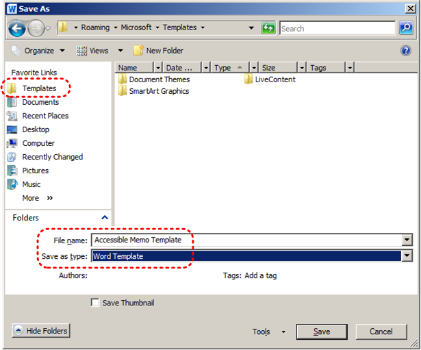
To select an accessible template:
Only use these steps if you have an accessible template available (e.g. that you previously saved). Otherwise, simply open a new (blank) document.
- Go to menu item: File > New
- Under Available Templates, select My Templates
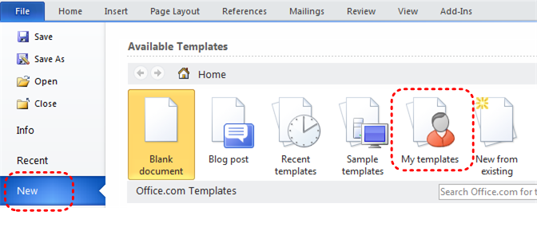
- In the New document dialog, select your accessible template from the list
- Select OK
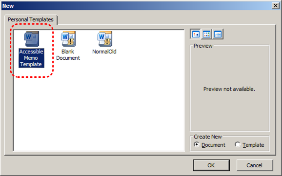
- A new document based on the template will be displayed. If you have chosen an accessible template, the document will be accessible at this point.
- As you add your content (e.g. text, images, etc.), ensure that you consult the sections that follow to preserve accessibility.
Technique 2. Specify Document Language
WCAG 2.0 Applicability:
- 3.1.1 Language of Page
- 3.1.2 Language of Parts
In order for assistive technologies (e.g. screen readers) to be able to present your document accurately, you must indicate the natural (human) language of the document. If a different natural language is used for a paragraph or selected text, this also needs to be clearly indicated.
Curb Cuts: The specified document language is also used by the spelling and grammar checker. In Canada, make sure to choose "English(Canada)" to avoid having to over-ride American spellings of words such as "colour".
To change the default language:
- Go to menu item: File
- Select Options from the list in the left window pane
- Select Language from the list in the left of the Options dialog
- Under Choose Editing Languages, select the editing language you want to use
Note: to add an editing language, select the language from the drop down list labeled [Add additional editing languages]
- Select Set as Default
- Close all Office 2010 programs and open them again for the changes to take effect
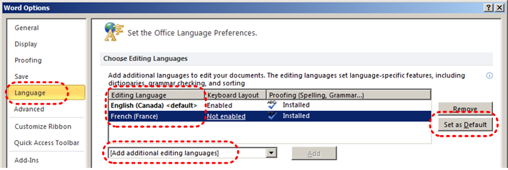
Word 2010 has an automatic language detection mechanism, which can automatically detect the language of your text. If you type a section of text in a different language than the rest of your document, Word 2010 will programmatically mark the language of that section of text appropriately.
To turn on automatic language detection:
- Go to menu item: Review
- In the Language section, select the Language button
- Select Set Proofing Language
- In the Language dialog, select the Detect language automatically check box
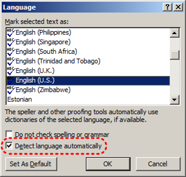
To apply a language directly to selected text:
- Select the text
- Go to menu item: Review
- In the Language section, select the Language button
- Select Set Proofing Language
- In the Mark selected text as box, select the language from the list
- Select OK
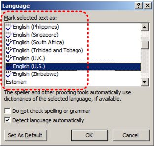
Technique 3. Provide Text Alternatives for Images and Graphical Objects
WCAG 2.0 Applicability:
When using images or other graphical objects, such as charts and graphs, it is important to ensure that the information you intend to convey by the image is also conveyed to people who cannot see the image. This is done by adding concise alternative text to of each image. If an image is too complicated to concisely describe in the alternative text alone (e.g. artwork, flowcharts, etc.), provide a short text alternative and a longer description as well.
Curb Cuts: Sometimes it may not be clear what a particular image is meant to convey and alternative text can provide that clarity. Also, alternate text has been shown to be included in search engines rankings.
Tips for writing alternative text
- Try to answer the question "what information is the image conveying?".
- If the image does not convey any useful information, leave the alternative text blank.
- If the image contains meaningful text, include all of the text in the alternative.
- Alternative text should be fairly short, usually a sentence or less and rarely more than two sentences.
- If more description is required (e.g. for a chart or graph), provide a short description in the alternative text (e.g. a summary of the trend) and more detail in the long description, see below.
- Test by having others review the document with the images replaced by the alternative text.
Tips for writing longer descriptions
- Long descriptions should be used when text alternatives (see above) are insufficient to answer the question "what information is the image conveying?".
- In some situations, the information being conveyed will be how an image looks (e.g. an artwork, architectural detail, etc.). In these cases, try to describe the image without making too many of your own assumptions.
- One approach is to imagine you are describing the image to a person over the phone.
- Ensure that you still provide concise alternative text to help readers decide if they are interested in the longer description.
Alternatively, you can include the same information conveyed by the image within the body of the document, providing the images as an alternate to the text. In that case, you do not have to provide alternate text within the image.
To add alternative text to images and graphical objects:
- Right-click* the object
- Select Format Picture…
- Select the Alt Text option from the list
- Fill in the Description.
If a Word 2010 document is saved to HTML, the Title and Description fields are combined into a single entry within the HTML <alt> tag. [Tested: September 30th, 2010]
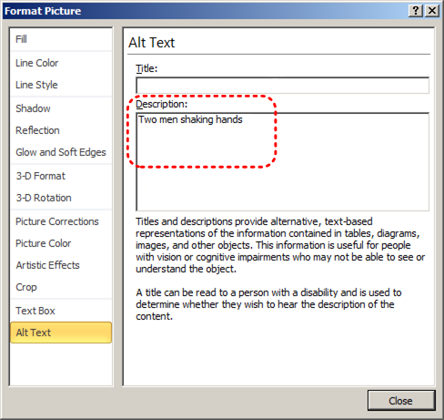
When inserting a very small image, or resizing a larger image to be much smaller, Word 2010 assumes that the image is intended to be a bullet-point for a bulleted list. Once Word 2010 defines the image as a bullet, the option to add alternative text disappears. Select Undo, to redefine the bullet as an image. When you right-click* the image, select Format Picture… and select the Alt Text tab in the Format Picture dialog. Alternative text can be found, or can be entered, into the Alternative text box.
Technique 4. Avoid "Floating" Elements
WCAG 2.0 Applicability:
- 1.3.2 Meaningful Sequence
When certain elements (e.g. images, objects, text boxes) are inserted into Word 2010 documents they default to being an "inline object". Inline objects keep their position on the page relative to a position in the text. This is beneficial for users of assistive technologies (e.g. screen readers), because the screen reader can simply read the object (or its alternative text) when it reaches that point in the text flow, so the context is clear.
However, Word 2010 also provides the option to have these elements "float" outside of the text order, with text flowing around, under or over it. This is a problem for screen reader users because their screen reader will often read the text (or alternative text) out of context, which can be confusing. These text flow options should be avoided.
Similarly, avoid placing drawing objects such as arrows, lines and shapes directly into the document (e.g. as borders, to create a diagram). Instead, create borders with page layout tools and insert complete graphical objects (e.g. pictures).
Curb Cuts: In-line elements are often easier to work with than floating elements, which can end up being shifted into strange positions as editing earlier parts of a document cause re-pagination.
To prevent an image or object from "floating":
- Select the object
- Go to menu item: Page Layout
- Select Position from the Arrange section
- Select In Line with Text
Technique 5. Use Headings
WCAG 2.0 Applicability:
- 1.3.1 Info and Relationships
- 2.4.1 Bypass Blocks
- 2.4.6 Headings and Labels
- 2.4.10 Section Headings
Any documents that are longer than a few paragraphs require structuring to make them easier for readers to understand. One of the simplest ways to do this is to use "True Headings" to create logical divisions between paragraphs. True headings are more than just bolded, enlarged, or centered text; they are structural elements that order and levels provide a meaningful sequence to users of assistive technologies.
Curb Cuts: Using true headings provides several important benefits: (1) Headings are used by Word 2010 to auto-generate a table of contents (see Technique 6.5 Use a Table of Contents); (2) Headings are used by the "Navigation Pane" which is especially helpful for long documents (see Word 2010’s "Navigation" Feature); and you can update all of the headings of a particular type at once, which keeps them consistent.
Tips for headings
- Use the default headings styles provided ("Heading ", "Heading 2", etc.)
- Nest headings properly (e.g. the sub-headings of a "Heading 1" are "Heading 2", etc.)
To apply headings to selected text:
- Select text
- Right-click* and select Styles
- Select the heading style from the list
To apply headings using the Styles toolbar
- Select text
- Go to menu item: Home
- In the Styles section, select the heading you wish to apply
Note: You can scroll through the multiple heading styles using the arrows on the right side of the Styles section. You can also change the Style design by selecting the Change Styles button on the right.
To modify heading styles:
- Go to menu item: Home
- In the Styles section, right-click* the style you wish to use from the Styles Gallery
- Select Modify
- In the Modify Style dialog, make the appropriate changes to style characteristics
- Select OK
To return to the default heading styles:
- Go to menu item: Home
- In the Styles section, select Change Styles
- Select Style Set
- Select Word 2010 from the list
Technique 6. Use Built-In Document Structuring Features
WCAG 2.0 Applicability:
- 1.3.1 Info and Relationships
- 1.3.2 Meaningful Sequence
- 2.4.2 Page Titled
Curb Cuts: Using built-in structural features is much more reliable that trying to use typography for formatting (e.g. tabs to separate table cells, repeated new lines for a page break).
6.1 Tables
When using tables, it is important to ensure that they are clear and appropriately structured. This helps all users to better understand the information in the table and allows assistive technologies (e.g. screen readers) to provide context so that the information within the table can be conveyed in a meaningful way.
Tips for tables:
- Only use tables for tabular information, not for formatting, such as to position columns.
- Use "real tables" rather than text formatted to look like tables using the TAB key or space bar. These will not be recognized by assistive technology.
- Keep tables simple by avoiding merged cells and dividing complex data sets into separate smaller tables, where possible.
- If tables split across pages, set the header to show at the top of each page. Also set the table to break between rows instead of in the middle of rows.
- Create a text summary of the essential table contents. Any abbreviations used should be explained in the summary.
- Table captions or descriptions should answer the question "what is the table's purpose and how is it organized?" (e.g. "A sample order form with separate columns for the item name, price and quantity").
- Table cells should be marked as table headers when they serve as labels to help interpret the other cells in the table.
- Table header cell labels should be concise and clear.
- Ensure the table is not "floating" on the page (see Technique 4. Avoid "Floating" Elements).
To add a table with headings:
- Go to menu item: Insert
- In the Tables section, select the Tables icon
- Select the number of rows and columns you would like your table to have
- Select the table and a Table Tools menu item should appear
- Go to menu item: Table Tools > Design
- In the Table Style Options section, select the Header Row check box
Note: Whenever possible, keep tables simple with just one row of headings.
6.2. Lists
When you create lists, it is important to format them as "real lists". Otherwise, assistive technologies will interpret your list as a series of short separate paragraphs instead of a coherent list of related items.
To create an ordered or unordered list:
- Go to menu item: Home
- In the Paragraph section, select the Bullets icon for unordered lists or select the Numbering icon for ordered lists
- To choose a different list format, select the arrow beside the icon
- Select a format from the format Library that appears in the drop-down menu
To modify list styles:
- Go to menu item: Home
- In the Paragraph section, select the arrow beside the Bullets icon for unordered lists or select the arrow beside the Numbering icon for ordered lists
- Select Define New Bullet… to create a new unordered list format
- Select Define New Number Format… to create a new ordered list format
- In the New Bullet dialog or the New Number Format dialog, select the list characteristics
- Select OK
6.3 Columns
Use the Columns feature for placing text in columns.
Note: Because columns can be a challenge for some users with disabilities (e.g. people using magnifiers), consider whether a column layout is really necessary.
6.4 Page Breaks
Start a new page by inserting a page break instead of repeated hard returns.
To add a page break:
- Go to menu item: Page Layout
- In the Page Setup section, select the arrow beside the Breaks icon.
- Select the type of break to add. Page break is used to start a new page with the same page layout (page orientation, headers, page numbering, etc.). Section break is used if you want to start a new section of the document with a differing page layout.
6.5 Table of Contents
Creating an index or table of contents to outline office document content can provide a means of navigating the meaningful sequence of content.
The best way to generate a table of contents is after applying the predefined heading styles, such as "Heading 1" as described above, to the headings that you want to include in your table of contents. After you apply these styles, you can then create a table of contents.
To insert a table of contents:
- Place the cursor in your document where you want to create the table of contents
- Go to menu item: References
- In the Table of Contents section, select Table of Contents
- Select the style that you want to use
To update a table of contents:
- Select the table
- Go to menu item: References
- In the Table of Contents section, select the Update Table button
6.6 Page Numbering
Numbering the pages of you document helps those reading and editing your document effectively navigate and reference its content. For users of assistive technologies, it provides a valuable point of reference within the document.
To insert page numbers:
- Go to menu item: Insert
- In the Header & Footer section, select Page Number
- Select where you would like to insert your page numbers
- Select the style of page number you would like to use
To format page numbers:
- Go to menu item: Insert
- In the Header & Footer section, select Page Number
- Select Format Page Numbers…
- In the Page Number Format dialog, select the page format characteristics you would like to use
Note: These changes are applied to the predefined page format styles. It does not create a new page format style.
6.7 Document Title
In case the document is ever converted into HTML, it should be given a descriptive and meaningful title.
To change the title of the current document:
- Go to menu item: File
- Select Info from the list in the left window pane
- In the right window pane, select on the Title text box
- Enter the Title
Note: The Title defined in the properties is different than the file name. It is also unrelated to the template name, discussed above.
Technique 7. Create Accessible Charts
WCAG 2.0 Applicability:
- 1.1.1 Non-text Content
- 1.3.1 Info and Relationships
Charts can be used to make data more understandable for some audiences. However, it is important to ensure that your chart is as accessible as possible to all members of your audience.
- All basic accessibility considerations that are applied to the rest of your document must also be applied to your charts and the elements within your charts. For example, use shape and color, rather than color alone, to convey information.
- When creating line charts, use the formatting options to create different types of dotted lines to facilitate legibility for users who are color blind.
- When creating bar charts, it is helpful to apply textures rather than colors to differentiate the bars
- Ensure that the contents are your chart are appropriate labeled to give users reference points that will help them to correctly interpret the information.
- Use the formatting options to change predefined colors, ensuring that they align with sufficient contrast requirements (see Technique 8.2 Use Sufficient Contrast)
- Consider providing the data that you used to create the chart in tabular form (e.g. as an appendix).
Curb Cuts: If the chart data is also provided in an appendix, it will be easier for all users to make use of the data.
Technique 8. Make Content Easier to See
WCAG 2.0 Applicability:
- 1.3.3 Sensory Characteristics
- 1.4.1 Use of Color
- 1.4.3 Contrast (Minimum)
- 1.4.5 Images of Text
- 2.2.2 Pause, Stop, Hide
Curb Cuts: All users will benefit from content that is easier to see.
8.1 Format of Text
When formatting text, especially when the text is likely to printed, try to:
- Use font sizes between 12 and 18 points for body text.
- Use fonts of normal weight, rather than bold or light weight fonts. If you do choose to use bold fonts for emphasis, use them sparingly.
- Use standard fonts with clear spacing and easily recognized upper and lower case characters. Sans serif fonts (e.g. Arial, Verdana) are typically easier to read than serif fonts (e.g. Times New Roman, Garamond).
- Avoid large amounts of text set all in caps, italic or underlined.
- Use normal or expanded character spacing, rather than condensed spacing.
- Avoid animated or scrolling text.
But can’t users just zoom in? Office applications do typically include accessibility features such as the ability to magnify documents and support for high contrast modes. However, because printing is an important aspect of many workflows and changing font sizes directly will change documents details such as the pagination, the layout of tables, etc., it is best practice to always format text for a reasonable degree of accessibility.
To change the text size for a default named style:
- Go to menu item: Home
- In the Styles section, right-click* the Style you wish to modify
- Select Modify Style
- Under Formatting in the Modify dialog box, select the appropriate font size
- Exit with OK
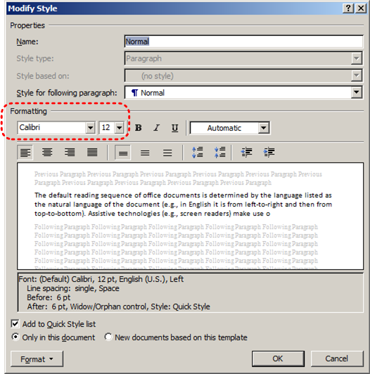
8.2 Use Sufficient Contrast
The visual presentation of text and images of text should have a contrast ration of at least 4.5:1. To help you determine the contrast, here are some examples on a white background:
- Very good contrast (Foreground=black, Background=white, Ratio=21:1)
- Acceptable contrast (Foreground=#767676, Background=white, Ratio=4.54:1)
- Unacceptable contrast (Foreground=#AAAAAA, Background=white, Ratio=2.32:1)
Also, always use a single solid color for a text background rather than a pattern.
In order to determine whether the colors in your document have sufficient contrast, you can consult an online contrast checker, such as the TPG Contrast Analyser.
8.3 Avoid Relying on Color or Sensory Characteristics
The instructions provided for understanding and operating content should not rely solely on sensory characteristics such as the color or shape of content elements. Here are two examples:
- Do not track changes by simply changing the color of text you have edited and noting the color. Instead use Word 2010’s "Track Changes" feature to track changes.
- Do not distinguish between images by referring to their appearance (e.g. "the bigger one"). Instead, label each image with a figure number and use that for references.
8.4 Avoid Using Images of Text
Before you use an image to control the presentation of text (e.g. to ensure a certain font or color combination), consider whether you can achieve the same result by styling "real text". If this is not possible, as with logos containing stylized text, make sure to provide alternative text for the image following the techniques noted above.
Technique 9. Make Content Easier to Understand
WCAG 2.0 Applicability:
- 2.4.4 Link Purpose (In Context)
- 3.1.4 Abbreviations
- 3.1.5 Reading Level
- 3.2.3 Consistent Navigation
- 3.2.4 Consistent Identification
9.1 Write Clearly
Curb Cuts: By taking the time to design your content in a consistent way, it will be easier to access, navigate and interpret for all users.
- Whenever possible, write clearly with short sentences.
- Introduce acronyms and spell out abbreviations.
- Avoid making the document too "busy" by using lots of whitespace and by avoiding too many different colors, fonts and images.
- If content is repeated on multiple pages within a document or within a set of documents (e.g. headings, footings, etc.), it should occur consistently each time it is repeated.
9.2 Provide Context for Hyperlinks
Hyperlinks are more effective navigation aids when the user understands the likely result of following the link. Otherwise, users may have to use trial-and-error to find what they need. To help the user understand the result of selecting a hyperlink, ensure that the link makes sense when read in the context of the text around it.
To add hyperlinks with meaningful text:
- Type (or paste in) a web address and press spacebar or "Enter" to convert into a hyperlink
- Select the link and right-click*
- Select Edit Hyperlink (Ctrl + K)
- Edit the text in the Text to display box
Technique 10. Check Accessibility
If you wish to check the accessibility of your document or template (see Technique 1. Use Accessible Templates), Word 2010 offers an "Accessibility Checker" to review your document against a set of possible issues that users with disabilities may experience in your file.
Important Note: Not checker cannot detect all types of accessibility issues. For example it can tell if alternative text is missing, but it cannot tell if alternative text is actually correct. It also doesn't test for some issues, including colour contrast.
The Office website provides more information about the Accessibility Checker, including the rules it uses to identify and classify accessibility issues.
The "Accessibility Checker" classifies issues as
- Error – content that makes a file very difficult or impossible for people with disabilities to understand
- Warning – content that in most, but not all, cases makes a file difficult for people with disabilities to understand
- Tip – content that people with disabilities can understand, but that might be better organized or presented in a way that would maximize their experience
To use the "Accessibility Checker":
- Make sure the file is saved as a DOCX (Older DOC files are not compatible with the checker).
- Go to menu item: File
- Select Info in the left window pane
- Under Prepare for Sharing, an alert will appear if a potential accessibility issue has been detected
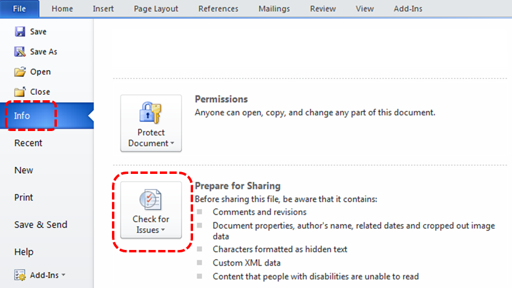
- To view and repair the issues, select Check for Issues and then Check Accessibility
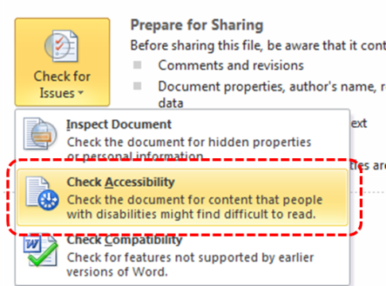
- An Accessibility Checker task pane will open, showing the inspection results
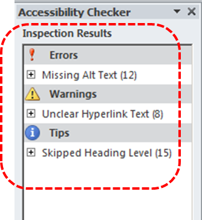
- Select a specific issue to see Additional Information
- Follow the steps provided to fix or revise the content
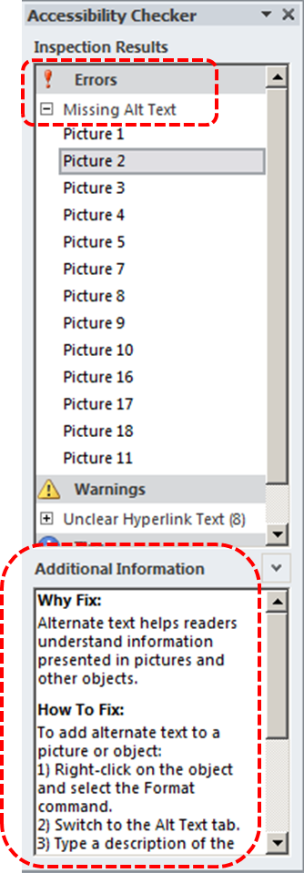
Technique 11. Use Accessibility Features when Saving/Exporting to Other Formats
In some cases, additional steps must be taken in order to ensure accessibility information is preserved when saving/exporting to formats other than the default.
Saving to PDF:
PDF documents are not always accessible. Accessible PDF documents are often called "Tagged PDF" because they include "tags" that encode structural information required for accessibility. To evaluate the accessibility of your PDF document, see Technique 10. Check Accessibility.
- Go to menu item: File
- Select Save As
- In the File name box, type a name for the file
- In the Save as type list, select PDF or XPS Document
- Select the Options button
- Under Include non-printing information in the Options dialog, ensure that the Document structure tags for accessibility check box is selected
- Select OK and Save
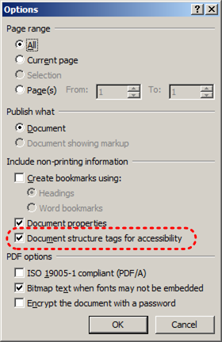
Saving to HTML:
- Go to menu item: File
- Select Save As
- In the File name box, type a name for the file
- In the Save as type box, select Web Page
- Select Save
- Check the HTML file for accessibility (see Technique 10. Check Accessibility)
To clean up your HTML file
- Remove unnecessary styles, line breaks, etc.
- Remove unnecessary id, class, and attributes
- Remove font tags
- Remove styles in the <head> tag
- Ensure the <th> tags have a scope attribute
- Remove <p> tags nested inside <th> and <td> tags
- Check for accessibility (see Technique 11, above)
Note: you may wish to use HTML editors or utilities to help with this process.
Technique 12. Consider Using Accessibility Support Applications/Plugins
Disclaimer: This list is provided for information purposes only. It is not exhaustive and inclusion of an application or plug-in on the list does not constitute a recommendation or guarantee of results.
Other Application Features
Word 2010’s "Navigation" Feature
After you have populated your document with content and true headings have been applied, you may wish to rearrange the content. In order to maintain the integrity and accessibility of the altered sequence, you will need to ensure that structural information (e.g. heading levels) is adjusted accordingly.
Word 2010 provides a "Navigation" mechanism which displays all parts of the document, such as headings, paragraphs, objects, etc. in sequential order. It helps you navigate, access, and manipulate the content. You can move headings or subordinate text up or down, rearranging their sequence in a way that can be programmatically determined and therefore accessible to assistive technologies.
To use the "Navigation" feature:
- Go to menu item: View
- In the Show section, select the Navigation Pane check box
- The Navigation pane will open to the left of your document
To jump to a location in a document:
- Select one of three navigation options:
- Select the Browse headings icon
Note: select the heading to view hierarchical headings and content below it.
- Select the Browse pages icon
- Select the Search text
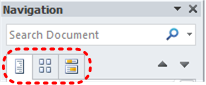
- Scroll through the sequential list and double-click* on the location you would like to jump to
To move content up or down in a document:
- Select and drag the content to a new location in the list
Accessibility Help
If you are interested in what features are provided to make using Word 2010 more accessible to users, documentation is provided in the Help system:
- Go to menu item: File
- Select Help from the list on the left
- Under the Support section, select the Help icon
- Enter "Accessibility" as your search term in the Help dialog box
Usage Notes
At the time of testing (September 30, 2010), Word 2010 provides a set of accessibility features that is sufficient to enable the production of accessible digital office documents. In addition, Word 2010 includes an accessibility checking feature.
This guide is intended to be used for documents that are:
- Intended to be used by people(i.e., not computer code),
- Text-based (i.e., not simply images, although they may contain images),
- Fully printable(i.e., where dynamic features are limited to automatic page numbering, table of contents, etc. and do not include audio, video, or embedded interactivity),
- Self-contained (i.e., without hyperlinks to other documents, unlike web content), and
- Typical of office-style workflows(Reports, letters, memos, budgets, presentations, etc.).
If you are creating forms, web pages, applications, or other dynamic and/or interactive content, these techniques will still be useful to you, but you should also consult the W3C-WAI Web Content Accessibility Guidelines (WCAG 2.0) because these are specifically designed to provide guidance for highly dynamic and/or interactive content.
File Formats
The default file format for Word 2010 is Office Open XML (DOCX).
In addition, Word 2010 offers many other word processor and web format saving options. Most of these have not been checked for accessibility, but some information and/or instructions are available for the following formats in Technique 12 (below).
Document Conventions
We have tried to formulate these techniques so that they are useful to all authors, regardless of whether they use a mouse. However, for clarity there are several instances where mouse-only language is used. Below are the mouse-only terms and their keyboard alternatives:
- *Right-click: To right-click with the keyboard, select the object using the Shift+Arrow keys and then press either (1) the "Right-Click" key (some keyboard have this to the right of the spacebar) or Shift+F10.
Disclaimer and Testing Details
- Following these techniques will increase the accessibility of your documents, but it does not guarantee accessibility to any specific disability groups. In cases where more certainty is required, it is recommended that you test the office documents with end users with disabilities, including screen reader users.
- The application-specific steps and screenshots in this document were created using Microsoft Word 2010 (ver.14.0.4762.1000, Windows XP, Aug. 2010) while creating a DOCX document.
- This document is provided for information purposes only and is neither a recommendation nor a guarantee of results. If errors are found, please report them to: adod-comments@idrc.ocad.ca.
References and Resources
- Microsoft Word 2010 Help
- WebAIM: "Alternative Text"
- Microsoft Word 2010 Online Accessibility Center
- Andrew Godwin, http://www.mail-archive.com/jaws-users-list@googlegroups.com/msg01713.html
Acknowledgments
Authors: Jan Richards, Sabrina Ruplall
This document was produced as part of the Accessible Digital Office Document (ADOD) Project. This project has been developed by the Inclusive Design Research Centre, OCAD University as part of an EnAbling Change Partnership project with the Government of Ontario and UNESCO (United Nations Educational, Scientific and Cultural Organization).


Accessible Digital Office Documents (ADOD) Project by Inclusive Design Research Centre (IDRC) is licensed under a Creative Commons Attribution-ShareAlike 3.0 Unported License.
Updated: 12 Dec 2014